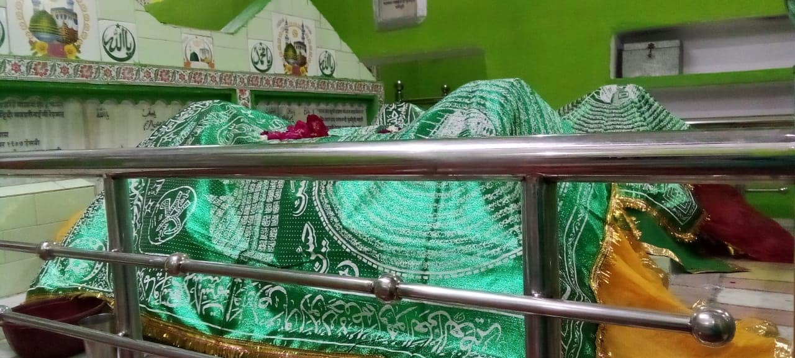
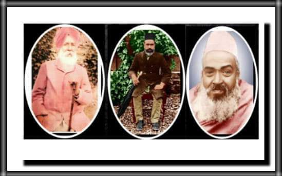
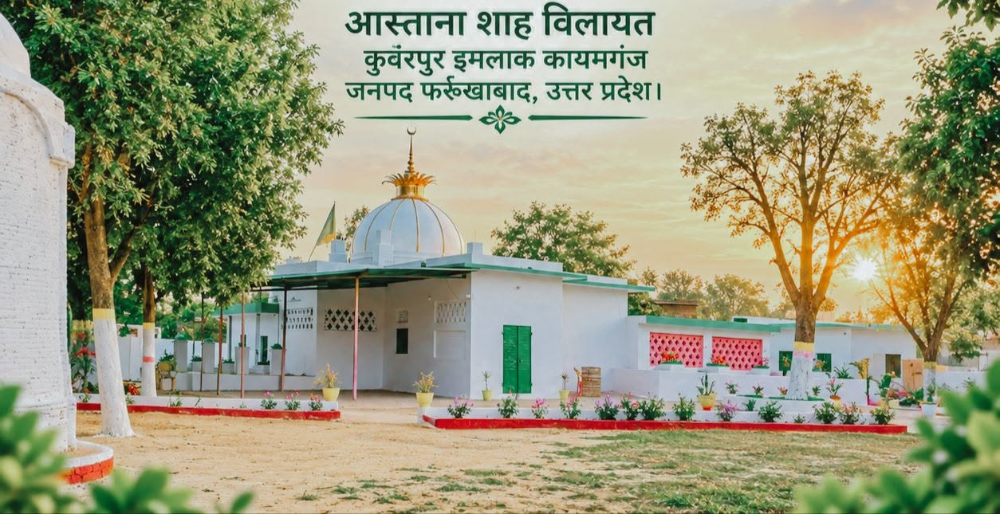

हज़रत मौलाना फ़ज़्ल अहमद ख़ान साहिब
حضرت مولانا فضل احمد خان صاحب
1838–1907
Discover His Legacyउत्तर प्रदेश के फर्रुखाबाद की सर-ज़मीन से विश्व भर में महकतीं आध्यात्म की खुशबू।
From the land of Farrukhabad, Uttar Pradesh — a fragrance of spirituality that reaches across the world.
यदि आपको ईश्वर की तलाश है, तो आध्यात्मवाद सीखो ताकि सत्यमार्ग पर चलकर ईश्वर के मिलन तक पहुँच सको।
If you seek the Divine, learn the path of spirituality — so that walking the true path, you may reach union with God.
हुज़ूर महाराज

The Naqshbandiyya spiritual lineage — an unbroken chain of divine transmission stretching from the Holy Prophet Muhammad (peace be upon him) through 36 realized masters to the present day.
नक़्शबंदी रूहानी सिलसिला — हज़रत पैग़म्बर मुहम्मद (सल्लल्लाहु अलैहि वसल्लम) से लेकर 36 कामिल बुज़ुर्गों तक फैला इलाही फ़ैज़ का एक न टूटने वाला सिलसिला।
१. हज़रत मुहम्मद मुस्तफा (सल्लल्लाहु अलैहि वसल्लम)
या इलाही अपनी अज़मत और अता के वास्ते,
नूरे ईमां दे मुहम्मद मुस्तफा के वास्ते।
२. हज़रत अबुबक्र सिद्दीक़ (रज़ि०)
The first Caliph and closest companion of the Prophet
दिल मेरा हो नूरे वहदत से मुनव्वर व वहीद,
हज़रते बूबक्र ज़ेबे अत्क़िया के वास्ते।
३. हज़रत सलमान फारसी (रह०)
The Persian companion — a seeker who traversed many masters before finding the Prophet
या इलाही नफ़्से क़ाफिर से मुझे इबलीस से,
ले बचा सलमान मुर्शिद बासफ़ा के वास्ते।
४. हज़रत इमाम कासिम बिन मोहम्मद बिन अबुबक्र सिद्दीक़ (रज़ि०)
Grandson of Abu Bakr Siddiq — a great scholar of Madinah
या इलाही इश्क़ से अपने मुझे कर सर बुलंद,
हज़रते क़ासिम इमामे बेरिया के वास्ते।
५. हज़रत इमाम जाफर सादिक (रज़ि०)
The truthful Imam — a fountainhead of both exoteric and esoteric knowledge
या इलाही इश्क़ की आतिश से हो सीना कबाब,
ज़ाफरे सादिक़ इमामे पेशवा के वास्ते।
६. हज़रत बायज़ीद बस्तामी (रह०)
Sultan al-Arifin — the king of the gnostics, Bistam, Persia (804–874 CE)
या इलाही ज़ुज़ तेरे भूलूँ मै सब दुनियाँ व दीं,
बायज़ीदे पेशवा मर्दे खुदा के वास्ते।
७. हज़रत ख्वाजा अबुल हसन खरकानी (रह०)
The saint of Kharqan, Persia — received spiritual training from Bayazid's soul
या इलाही फ़ज्ल से दे दौलतें फ़क्रो फ़ना,
बुल हसन ख्वाजा हमारे बासफ़ा के वास्ते।
८. हज़रत ख्वाजा अबुल कासिम गुरगानी (रह०)
The light of guidance — keeper of the spiritual chain
या इलाही ता अदब क़ायम रहे यह सिलसिला,
ख़्वाजा अबुल क़ासिम नूरूल हुदा के वास्ते।
९. हज़रत शैख अबू अली फारमदी तूसी (कु०सि०)
The bridge between the Persian saints and the Khwajagan of Central Asia — Tus, Persia
या इलाही जब मैं तेरा नाम लूं तब हो हुज़ूर,
बू अली मक़्बूल दरगाहें खुदा के वास्ते।
१०. हज़रत ख्वाजा यूसूफ हम्दानी (कु०सि०)
The great master of Hamadan and Merv — teacher of the Central Asian Khwajagan
या इलाही कर हिसाब तन से मुझको पाक़ साफ़,
ख्वाजा यूसुफ कुतबे आलम बाख़ुदा के वास्ते।
११. हज़रत ख्वाजा अब्दुल ख़ालिक गुज्दवानी (कु०सि०)
Formulated the eight principles of the Khwajagan — father of silent dhikr
या इलाही इज़्ज़ते दुनियाँ व दीं होवे अता,
अब्दे ख़ालिक़ गुज्दवानी बा हया के वास्ते।
१२. हज़रत ख्वाजा मुहम्मद आरिफ़ रेवगरी (रह०)
The gnostic of Rewgar — keeper of the Khwajagan flame
या इलाही कर अता ईमां कि जिसके बाद कुफ्र,
हो न हज़रत ख्वाजा आरिफ बासफ़ा के वास्ते।
१३. हज़रत ख्वाजा महमूद अन्जीर फगनवी (कु०सि०)
Master of Faghnaw — maintained the tradition of silent remembrance
या इलाही दूर कर जिस्मी अलालत और रुहानी मेरी,
ख्वाजये महमूद मुर्शिद बाज़िया के वास्ते।
१४. हज़रत ख्वाजा अली रामेतनी (रह०)
Known as Azizan — the beloved master of Ramitan
या इलाही दूर कर दुनियाँ व दीं के दर्द दुख,
हज़रते ख्वाजा अज़ीज़ां बादशाह के वास्ते।
१५. हज़रत ख्वाजा मुहम्मद बाबा सम्मासी (रह०)
The master who foretold the coming of Baha-ud-Din Naqshband
या इलाही शरा पर जब तक जिऊँ साबित रहूँ,
हज़रते ख्वाजा मुहम्मद बाअता के वास्ते।
१६. हज़रत ख्वाजा अमीर कुलाल (रह०)
The direct master of Baha-ud-Din Naqshband — a potter saint of Bukhara
या इलाही हिफ्ज़े ईमां वक़्त मुर्दन कीजिये,
हज़रते मीरे कुलाले पार्सा के वास्ते।
१७. हज़रत ख्वाजा बहाउद्दीन नक्शबंदी (रह०)
Founder of the Naqshbandiyya Order — Bukhara, 1318–1389
या इलाही मुझसे आमाले शनीअ: को छुपा,
शह बहाउद्दीन अक़मल बासफ़ा के वास्ते।
१८. हज़रत ख्वाजा अलाउद्दीन अत्तार (कु०सि०)
Son-in-law and spiritual heir of Naqshband — the perfumer saint
या इलाही मुझ पे होवे नूर वहदत आश्क़ार,
शह अलाउद्दीन मुर्शिद रहनुमा के वास्ते।
१९. हज़रत मौलाना याकूब चर्क़ी (रह०)
Scholar and saint of Charkh — preserved the master's teachings in writing
या इलाही दे अमांमिन कुल्लि दाइन और बला,
हज़रते याक़ूब चर्खी पुरज़िया के वास्ते।
२०. हज़रत ख्वाजा नासिरुद्दीन उबैदुल्लाह अहरार (कु०सि०)
The most influential Naqshbandi of the 15th century — Samarkand and Tashkent
या इलाही पुल पे और महशर में हो पीरों का साथ,
ख्वाजए अहरार रासुल अत्क़िया के वास्ते।
२१. हज़रत ख्वाजा मुहम्मद ज़ाहिद (कु०सि०)
Carried the Naqshbandi teaching through the Timurid era
या इलाही जुहदो तक़्वा और मुहब्बत अपनी दे,
हज़रते ख्वाजा मुहम्मद पार्सा के वास्ते।
२२. हज़रत मौलाना दरवेश मुहम्मद (कु०सि०)
The dervish master — link between Central Asia and the Indian subcontinent
या इलाही सारे इस्यां और निस्यां मुआफ़ कर,
शाह दर्वेशे मुहम्मद मुर्तज़ा के वास्ते।
२३. हज़रत मौलाना ख्वाजगी इमकिनकी (कु०सि०)
Master of Imkanak — the teacher of Baqi Billah
या इलाही दोस्त मेरे होंवे हरदम शादमा,
ख्वाजा इमक़िनकी मुहम्मद बादशाह के वास्ते।
२४. हज़रत ख्वाजा बाक़ी बिल्लाह बेरंग (कु०सि०)
Brought the Naqshbandiyya to India — Delhi, d. 1603
या इलाही तू हो बाक़ी और सबको जाऊँ भूल,
ख्वाजा अब्दुल बाक़ी मुर्शिद रहनुमा के वास्ते।
२५. हज़रत इमाम रब्बानी मुजद्दिद अल्फ़सानी शैख अहमद फ़ारुख़ी सरहिंद (कु०सि०)
Reviver of the Second Millennium — founder of the Mujaddidiyya branch (1564–1624)
या इलाही या करीब़ कुर्ब़ कर अपना अता,
गौसुल आज़म शैख अहमद पेशवा के वास्ते।
२६. हज़रत ख्वाजा मुहम्मद मासूम (रह०)
Son and khalifa of Mujaddid Sirhindi — continued the revival
या इलाही हुब्बे पीराने तरीक़त मुझको दे,
हज़रते मासूम रासुल अत्क़िया के वास्ते।
२७. हज़रत शैख सैफुद्दीन (कु०सि०)
The sword of faith — son of Muhammad Masum
या इलाही शिर्को कुफ्रो मासियत से दूर रख,
शैख़ सैफुद्दीन मुर्शिद रहनुमा के वास्ते।
२८. हज़रत सैयद नूर मुहम्मद बदायूंनी (रह०)
The light of Badaun — a saint of extraordinary spiritual radiance
या इलाही ग़ैर का मुहताज मत कर मेरे रब,
सय्यिदे नूरे मुहम्मद मुक़्तदा के वास्ते।
२९. हज़रत शमशुद्दीन हबीबुल्लाह मिर्ज़ा मज़हर जानजाना (रह०)
The great poet-saint and martyr of Delhi (1699–1781)
या इलाही ग़ैब से रोज़ी दे ऐ रोज़ी रहा,
शम्से दीं महबूब मज़हर मीरज़ा के वास्ते।
३०. हज़रत मौलवी शाह नईमुल्लाह बहिराइची (रह०)
The revered saint of Bahraich
या इलाही दे मुझे तौफ़ीक़ आमाले हसन,
हज़रते ख्वाजा नईमुल्लाह शाह के वास्ते।
३१. हज़रत मौलाना शाह मुरादुल्लाह लखनवी (कु०सि०)
The beloved of God — saint of Lucknow
या इलाही अपनी रहमत से तू दे दिल की मुराद,
शाह मुरादुल्लाह मक़बूले ख़ुदा के वास्ते।
३२. हज़रत मौलाना सैयद अबुल हसन नसीराबादी (कु०सि०)
The light of guidance — Qutub of his era
या इलाही शाद रख अपनी मुहब्बत में मुझे,
कुत्बे आलम बुल हसन नुरुलहुदा के वास्ते।
३३. हज़रत मौलवी अहमद अली खां (खलीफा जी) मऊ रशीदाबादी (रह०)
The master of the Fatehgarh region — direct guru of Huzoor Maharaj
या इलाही रहम कर मज़लूम आसी पर सदा,
मौलवी अहमद अली खां रहनुमा के वास्ते।
३४. हज़रत मौलाना शाह फज़ल अहमद खा नक्शबंदी (कु०सि०)
Huzoor Maharaj — the radiant master of Raipur (1838–1907)
या इलाही तीरे वहदत से मुझे मज़रूह कर,
फज़्ल अहमद खां इमामुल अस्फ़िया के वास्ते।
३५. हज़रत मौलाना शाह विलायत हुसैन खा नक्शबंदी (रह०)
Chhote Dada Huzoor — spiritual successor at the Aastana
या ईलाही साफ कर सीना मेरा हर चीज़ से,
शाह विलायत हुसैन ख़ाँ पुरज़िया के वास्ते।
३६. मौलवी शाह गफ्फार हुसैन खा नक्शबंदी (रह०)
Custodian of the Aastana Shah-e-Vilayat, Raipur
या ईलाही जिक्र अपना मेरे दिल में दे बसा,
मौलवी शाह गफ्फार हुसैन बासफ़ा के वास्ते।
This silsila represents the spiritual transmission that flows through the hearts of the masters — a living connection to the Divine Source.
उनके जीने का तरीक़ा
Huzoor Maharaj possessed the rare ability to transmit spiritual grace directly from heart to heart. He spent extensive time in deep meditation, and those who sat in his presence often found their inner condition elevated — not through words or instruction, but through the silent flow of the master's own spiritual state.
हुज़ूर महाराज के पास दिल से दिल तक रूहानी फ़ैज़ पहुँचाने की नायाब सलाहियत थी। वे गहन ध्यान में काफ़ी वक़्त गुज़ारते थे, और जो उनकी उपस्थिति में बैठते थे वे अक्सर अपनी अपनी बातिनी (अंदरूनी) हालत को बेहतर पाते थे — शब्दों या निर्देशों से नहीं, बल्कि गुरु की अपनी रूहानी कैफ़ियत के ख़ामोश बहाव से।
Constant remembrance of the Divine and deep contemplative meditation formed the twin pillars of practice. Seekers were guided to turn inward — not through elaborate rituals, but through the silent stillness of the heart, where the Divine Presence dwells within every soul.
ईश्वर का लगातार याद और गहरा ध्यान — ये अमल के दो स्तम्भ थे। साधकों को अंदर की तरफ़ मुड़ने के लिए राह दिखाई जाती थी — पेचीदा रस्मों से नहीं, बल्कि दिल के ख़ामोश ठहराव से, जहाँ ख़ुदा की मौजूदगी हर रूह में बसी है।
The path taught by Huzoor Maharaj was a complete system of inner refinement — rooted in awareness of every breath, mindfulness in every step, and continuous remembrance of the Divine throughout the activities of daily life. Not a withdrawal from the world, but a way of being fully present within it.
हुज़ूर महाराज द्वारा सिखाया गया मार्ग अंदरूनी सफ़ाई का एक मुकम्मल निज़ाम था — हर साँस में होश, हर क़दम पर नज़र, और रोज़मर्रा की ज़िन्दगी में ख़ुदा की लगातार याद। दुनिया से भागना नहीं, बल्कि उसमें पूरी तरह मौजूद रहने का रास्ता।
Huzoor Maharaj taught that "religions are many but their essence is one — to gain spirituality." He shared spiritual practices with seekers of all faiths without discrimination, and would quietly leave any gathering where someone criticized another's religion.
हुज़ूर महाराज ने सिखाया कि "धर्म अनेक हैं परन्तु उनका सार एक है — आध्यात्मिकता प्राप्त करना।" उन्होंने बिना किसी भेदभाव के सभी धर्मों के साधकों के साथ रूहानी अमल साझा की, और जहाँ कोई किसी के मज़हब की बुराई करता, वहाँ से ख़ामोशी से उठकर चले जाते थे।
Huzoor Maharaj refused offerings and would not allow disciples to touch his feet. Instead, he served those who came to him with his own hands — embodying the principle that true spiritual greatness expresses itself through selfless service, not through displays of authority.
हुज़ूर महाराज नज़राने क़बूल नहीं करते थे और मुरीदों को अपने पैर छूने नहीं देते थे। इसकी जगह, वे अपने हाथों से आने वालों की सेवा करते थे — इस बात को जीते हुए कि सच्ची रूहानी बड़ाई बेलौस सेवा में झलकती है, दिखावे में नहीं।
Huzoor Maharaj entrusted his complete spiritual legacy to the disciple he recognized as most fit to carry it forward — regardless of outward faith. For one who had arrived at the source from which all religions spring, such distinctions simply did not arise.
हुज़ूर महाराज ने अपनी पूरी रूहानी विरासत उस शिष्य को सौंपी जिसमें उन्होंने इसे आगे ले जाने की सबसे ज़्यादा क़ाबिलियत देखी — ज़ाहिरी मज़हब की परवाह किए बग़ैर। जो उस स्रोत तक पहुँच चुका हो जहाँ से सभी मज़हब निकलते हैं, उसके लिए ऐसे फ़र्क़ बेमानी थे।
हुज़ूर महाराज के शिष्य

लालाजी महाराज
For one who had realized the highest truth, the question of a disciple's outward faith simply did not arise. Huzoor Maharaj saw in Lalaji a vessel fit to carry the divine current forward — and transmitted his complete spiritual authority to him, as naturally as a river flows to the sea.
चाचाजी महाराज
After Lalaji Maharaj's passing, Chachaji Maharaj carried the mission forward — imparting spiritual knowledge through Sant Mat and serving seekers in Kanpur until his own final departure in 1947.
दरगाह शरीफ़

दरगाह की ज़ियारत
Aastana Shah Vilayat, Raipur
Gram Kunwarpur Imlaq, Post Raipur Khas
Tahsil Kayamganj, Janapad Farrukhabad
Uttar Pradesh 209502, India
Contact: +91 91984 25473, +91 83032 16812
आस्ताना शाहे विलायत, रायपुर
ग्राम कुवंरपुर इमलाक़, पोस्ट रायपुर ख़ास
तहसील कायमगंज, जनपद फ़र्रुख़ाबाद
उत्तर प्रदेश 209502, भारत
सम्पर्क: +91 91984 25473, +91 83032 16812
By Rail: Fatehgarh Railway Station is the nearest railhead, well-connected to major cities including Lucknow, Kanpur, and Delhi.
By Road: Fatehgarh is accessible via NH-91. The Dargah is a short journey from the town center.
रेल से: फ़तेहगढ़ रेलवे स्टेशन सबसे नज़दीकी स्टेशन है, जो लखनऊ, कानपुर और दिल्ली जैसे बड़े शहरों से जुड़ा है।
सड़क से: फ़तेहगढ़ NH-91 से पहुँचा जा सकता है। दरगाह शहर से थोड़ी ही दूर है।
Visitors are requested to maintain an atmosphere of reverence and quiet contemplation. Please dress modestly and remove footwear before entering the sacred precincts. All are welcome regardless of faith or background.
आने वालों से गुज़ारिश है कि अदब और सुकून का माहौल बनाए रखें। सादा कपड़े पहनें और अंदर जाने से पहले जूते उतार दें। हर धर्म और हर तबक़े के लोगों का दिल से स्वागत है।
The annual Urs (commemoration) of Huzoor Maharaj is observed with spiritual gatherings, prayers, and dhikr. Devotees from near and far assemble to honor the saint's memory and receive spiritual blessings.
हुज़ूर महाराज का सालाना उर्स रूहानी महफ़िलों, इबादत और ज़िक्र के साथ मनाया जाता है। दूर-दूर से श्रद्धालु बुज़ुर्ग की याद में सर झुकाने और रूहानी फ़ैज़ पाने के लिए आते हैं।